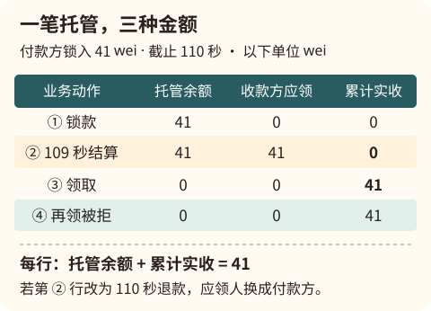

本页目录
只记 41。 这两行是两次查看同一本账，不是两张付款凭条。第二次增加的是 41 − 41 = 0 wei；「被拒」还说明这不是一次成功的零额付款。这能解释这一单，不能据此保证任意订单、任意操作顺序都不会多付。
只把重试记录中的「领取被拒」遮住，累计实收仍看得见。现在还能回答什么？仍能算出没有多收钱，却不能判断第二次请求是否被拒：一个错误地返回成功却没付钱的程序，也会留下相同的金额。验收时要同时看调用结果和余额差。
只想学会看账，可以去第 16 课：凭什么相信部署清单仍有效。以下选做本地实验，沿用第 14 课「结算只产生应领，领取才出金」的判断；从调用数据读方法的做法见第 13 课。本课不改业务合约，只运行测试和记账器。没有外部节点、钱包、私钥或测试币水龙头。下文第 109、110 秒是 Forge 本地 EVM 的区块时间戳，不是等待终端的时长。
从交接单推导断言，而不是照抄合约变量
把订单分成三栏：托管余额是钱现在放在哪里；应领是账上欠谁；实收是领取人的账户实际多了多少钱。记应付时，同一笔 41 同时出现在余额和应领两栏：前者是资产，后者是债务，不能相加说成 82。退款也不是自动打钱，而是让付款方取得应领权。用于对账的「累计领取」只在 withdraw() 成功、收款账户发生净增时计一次。


如果把合约自己报出的应领金额同时当作实发金额，两边相等可能只是因为抄了同一行。测试另立一册：锁入时记付款方余额的实际减少，领取时记领取人余额的实际增加，再与合约现金、双方 credit 和订单状态对照。就像 Java 订单服务对银行流水，不能拿两份由同一字段生成的 DTO 互证。
这里可以把余额差归因给单次调用：两个角色是互异的本地无代码地址，没有其他收支，prank 改的是内部测试调用的身份，不让该账户承担一笔已签名上链交易的 gas。若改用真实节点交易，付款方可能还付手续费，净差口径要回到第 11 课的费用账。本实验只给付款方一次起始资金，不在每次提款前重置余额，也不向托管额外转款。不要把这些条件下的等式误写成任意链上地址的余额定律。
先跑固定例子：早一秒与恰好到点
环境：Foundry Forge 1.7.1、原生 solc 0.8.28，Cancun，优化器开启、200 runs；没有 forge-std 或其他 Solidity 库。首次取工具见本卷安装说明，工具就绪后所有测试均可离线执行。从仓库根目录，在同一终端进入工程：
export PATH="${XDG_CACHE_HOME:-$HOME/.cache}/chain-course/m04/bin:$PATH"
export FOUNDRY_SOLC="$(command -v solc)"
cd labs/m04
forge --version
"$FOUNDRY_SOLC" --version
forge test --offline --match-contract EscrowPropertiesTest --match-test test_LastSecondSettles -vvvv
forge test --offline --match-contract EscrowPropertiesTest --match-test test_CutoffRefunds -vvvv
setUp() 从本地第 100 秒开始，在付款方身份下部署一份新托管，截止为 100 + 10 = 110。每个固定测试从同一初态开始。两者调用的是同一个 _runOrder(40, atCutoff)；40 是生成器输入，不是转款额：1 + 40 % 1_000_000 = 41 wei。唯一不同的开关是 atCutoff：false 在 109 秒由付款方 settle()，true 在 110 秒由付款方 refund()。推进时钟不等于触发退款，还要有这次明确的调用。
在 -vvvv 的调用树里找测试事件 Page，不是把最外层的 PASS 当余额。字段顺序是 step, inWei, paidWei, heldWei, payerCreditWei, payeeCreditWei。下面是预期值；每行后五列都是 wei。两条路径的第一行和最后两行数值相同，但领取调用者不同。
| 账页 | 累计入金 | 累计实收 | 托管余额 | 付款方应领 | 收款方应领 |
|---|---|---|---|---|---|
两轮 lock |
41 | 0 | 41 | 0 | 0 |
109 秒 resolve，已结算 |
41 | 0 | 41 | 0 | 41 |
110 秒 resolve，已退款 |
41 | 0 | 41 | 41 | 0 |
各自由正确的人 withdraw |
41 | 41 | 0 | 0 | 0 |
同一人 retry，内层调用被拒 |
41 | 41 | 0 | 0 | 0 |
业务合约的 Settled、Refunded 和 Withdrawn 是不同的事件；Page 则是测试器另外打印的对账记录，不属于待部署的 ABI。沿调用树核对 withdraw 第一次成功、第二次回退。测试对第二次只接受 ok == false 且领取人余额不变，随后还检查现金、两份应领和终态。若错误地「成功但付零」，即便表面的余额一样，也过不了这一条。
用三种测试回答三个不同的问题
单测：已签字的工单能否照做？ 固定测试就是上面那两张账。还有 test_PayeeCannotSettle：在钱已锁入、时间未到、其他条件均合法时，仅换收款方去点验收。预期业务调用被拒，订单仍为 Locked，余额 41、双方应领均为 0。只有这样隔离变量，才知道拒绝的是角色而不是「根本没锁款」。
Fuzz：同一路径，换金额还成立吗？ testFuzz_Posting(uint96 raw, bool atCutoff) 让 Forge 生成一对输入，每个样本都从初态运行到连续两次领取。取模再加一将输入映射到 [1, 1_000_000] wei；即使抽到 0 也能真实锁入 1 wei，不会把大量样本花在预期的零额拒绝上。两个布尔值对应相邻的两个有效决策时刻。取模不是均匀抽样的承诺，64 轮也不会穷尽区间。零金额、错误角色等拒绝条件需要另列用例，不能从这个有效域外推。
Invariant：让别人挑操作顺序，每一步还能平账吗？ EscrowLedgerHandler（下称记账器）不是第二套托管。Forge 通过测试合约的 targetContracts() 和 targetSelectors() 找到它，每次从 lock(raw)、resolve(atCutoff)、collect() 三个动作中选择一个。某次的入金、应领人、是否领过会留给下一次调用；不会每一步都重跑 setUp()。而 fuzz 的每个输入是固定的一整条流程，两者不要混淆。
| 动作 | 怎样执行 | 记账器凭什么记数 |
|---|---|---|
lock(raw) |
新单以付款方身份用正额锁款；已有未完成订单则不再锁 | principal = beforePayer - PAYER.balance，要求等于调用金额，再加进 totalIn |
resolve(atCutoff) |
仅在已锁且尚未决定时执行；在截止前一秒结算或恰好到点退款 | 本册按所作的业务决定记应领人，不读合约的 credit 来填预期。不把结算算作出金 |
collect() |
已决定时由登记的人领取；已领取则检查再领被拒 | 直接读领取人调用前后余额。首次要求净增恰等于本单本金，才把净增累加进 totalPaid；再次不许增加 |
在不具备某动作的前提时（如一开始就抽到领取），记账器不向合约发那次调用。已经成功领取且验证过再领被拒后，若又抽到锁款，先核旧单已清，再部署另一份同源码的新单；绝不重开旧单，也不清历史累计。test_TwoOrdersOneJournal 固定先结算 41，再退款 59，最后累计实际入金和实收都是 100，且旧单仍为 Settled。这让两条路径、两次成功领取和两次明确的拒绝都有确定的到达证据，而不依赖某次随机序列刚好走完。
随机动作之后怎么查错？以本单为例，在 109 秒结算、还没领时，记账器从两端余额记下的累计入金是 41、累计实收是 0。assertLedger() 先检查没多付（totalPaid <= totalIn），再要求托管余额等于 41 − 0 = 41（以前的订单均已结清）。这两项都对，还可能把钱欠错了人。所以第三步要按记账器做过的决定核 state 和双方 credit：这时应为已结算、付款方应领 0、收款方应领 41。若改在 110 秒退款，即使前两项数值完全一样，应领的也必须是付款方。
invariant_cashAndClaimsAgree() 每步都做这套检查。主调用意外回退会让本轮失败，只有预期被拒的重复领取才在记账器内捕获并断言。若吞掉所有失败，只查「实收没超过入金」，两者一直为零也能通过；所以还需要固定测试证明真正走过出金路径。
在同一 labs/m04 目录运行全套：
forge test --offline --match-contract EscrowPropertiesTest --fuzz-seed 0x15 -j 1 -vv
forge test --offline --match-test test_TwoOrdersOneJournal -vvvv
按本工程配置，预期四个固定测试通过，testFuzz_Posting 通过 64 轮，invariant_cashAndClaimsAgree 通过 32 轮、每轮深度 16（512 次记账器调用），意外回退为 0；fail_on_revert = true。512 不是 512 次成功付款。 包含因前提不符而返回的动作；要用固定路径的 Page 和收款余额差来证明实际付过。命令固定了种子和工作线程数，地址、Gas 数、selector 分布都不是答案。
留一份能重放的反例：改错的是验收公式，不是托管
某张旧报表写成「decidedAt <= cutoff 时仍给收款方记应领」。在 109 秒这没露馅，但 110 秒会把本应付给付款方的 41 错列到收款方。用临时目录重做这次账页纠错，只改测试中的报表公式一个比较符，不换实现、不向任何节点发交易。以下仍从 labs/m04 开始，保留同一个终端的变量。
PROJECT=$PWD
CASE=$(mktemp -d)
mkdir "$CASE/src" "$CASE/test"
cp foundry.toml "$CASE/"
cp src/MilestoneEscrow.sol "$CASE/src/"
T=test/EscrowProperties.t.sol
awk '{ sub(/bool vendorDue = decidedAt < cutoff;/, "bool vendorDue = decidedAt <= cutoff;"); print }' "$T" > "$CASE/$T"
cd "$CASE"
forge test --offline --match-test test_CutoffRefunds -vvvv > fixed-red.log 2>&1
最后一条预期非零退出；到这里先读 fixed-red.log。输入固定为 raw=40, atCutoff=true，resolve 行应为 41,0,41,41,0，失败原因应是 posting at cutoff，而不是编译错误。接着在同一目录收集由 Forge 自己找到的输入（普通交互终端中逐段运行，不要用 set -e 跳过预期失败后的取证）：
forge test --offline --match-test testFuzz_Posting --fuzz-seed 0x15 -j 1 -vvv > fuzz-red.log 2>&1
F=cache/fuzz/failures/EscrowPropertiesTest/testFuzz_Posting
cat "$F"
cp "$F" counterexample.json
forge test --offline --match-test testFuzz_Posting --fuzz-seed 0x15 -j 1 -vvv > replay-red.log 2>&1
两条 forge test 均预期因同一条报表断言失败。记录 fuzz-red.log 中的 args 和 calldata，atCutoff 应为 true；实际 raw 可能不是 40，用 1 + raw % 1_000_000 换算成 wei。Forge 1.7.1 将该模糊测试的反例写进上面的 JSON，再跑同名测试时会先尝试已存输入。若出错的是 invariant，反例则是有序的调用序列，默认在 cache/invariant/failures/<测试合约>/<测试函数>；不要只抄最后一次 collect()，没有前置状态就重放不了。cache/test-failures 用于筛选上次失败的测试名，不等于保留了这些参数。先归档再改，不要先 forge clean 把证据洗掉。
现在把原工程里正确的 < 公式带回临时工程，保留缓存和已经归档的 JSON，验证已发现输入与两个相邻时刻：
cp "$PROJECT/$T" "$T"
forge test --offline --match-test testFuzz_Posting --fuzz-seed 0x15 -j 1 -vvv > fuzz-green.log 2>&1
forge test --offline --match-test 'test_(CutoffRefunds|LastSecondSettles)' -vvvv > fixed-green.log 2>&1
cat fixed-green.log
printf '本次工单及日志：%s\n' "$CASE"
cd "$PROJECT"
预期两个固定用例均通过，fuzz 恢复通过。交接时归档版本、配置、错误比较符、完整反例和红绿两次输出；源码中长期保留 test_CutoffRefunds 这个具名回归，它即使在没有缓存的干净机器上，也会覆盖原先误判的一秒。若要钉住随机发现的具体金额，将日志中的那个 raw 与 true 原样作为 _runOrder 的两个常量另加具名用例，不要把换算后的 wei 填回 raw 参数。种子有助于重跑一轮，不能替代原参数、操作顺序和代码版本。
这些绿灯不包含什么
- 最小权限不是「对所有人隐藏函数」。 函数 ABI 是公开的；由合约校验实际调用者。付款方才能锁款和作决定，领取入口按
msg.sender取自己的应领，没有代领参数、管理员替人改账或紧急清空的后门。它仍信任付款方在截止前判断里程碑是否完成；代码不替双方仲裁。 - 先记账再交互，领取与结算分开。
withdraw()检查非零应领，将其置零，最后对领取人执行带金额的调用；若发送失败，合约回退，前面的置零不会单独生效。这样结算本身不依赖领取人当场接款成功。第二次领取的断言检验可观察结果，不是外部接收方任何行为都正确的证明；本课没有测试任意收款合约、网络重组或钱包误操作。 - 版本也是边界。 这里测试只导入本卷那一份源码，通过四个明确签名的本地 cheatcode 设置余额、身份、时间、读取时间；这些接口不是主网合约依赖。若今后引入第三方库，固定其发布版本或提交与校验值，复核实际引入的调用和权限，并用同一套账页重新验证。库名、审计标和高覆盖率都不能说明你的业务规则已被覆盖。
- 不是审计报告。 本轮只对指定编译设置、两个角色、有限金额、两个相邻时刻及生成过的序列给出证据。对账式还假定没有无关入账；不能倒过来用合约账户的全部余额当成本单本金。覆盖率回答「哪些行执行过」，不回答「应领人是否应该是这个地址」，更不证明真实资金可以上线。
独立作业：退款后，谁能按领取键？
在你自己的临时工程测试合约 EscrowPropertiesTest 中增加 test_RefundClaimBelongsToPayer，不要改业务合约。新工单金额 73 wei：从测试输入推回适用的 raw，锁款并在 110 秒退款。这次不要立刻让付款方领取；先让收款方单独调用一次 withdraw()，检查被拒且状态不变。然后让付款方正常领取，再由付款方尝试领取第二次。可沿用 test_PayeeCannotSettle 捕获预期拒绝的写法；读取地址和合约引用后再 prank，因为它只作用于下一次外部调用。
cd "$CASE"
forge test --offline --match-test test_RefundClaimBelongsToPayer -vvvv > review-73.log 2>&1
cat review-73.log
交出新增测试源、实际命令和三张 Page，并在调用树标出每次 withdraw 的调用方。判据：收款方被拒后仍是 Refunded，五栏为 73,0,73,73,0；付款方成功后为 73,73,0,0,0；付款方再领被拒后五栏不变。另核付款方首次领取的余额净增为 73，收款方全程净增为 0。若用错身份时只查「调用失败」、既没查原债权仍在也没查正确的人能取回，就不能交班。
查证原文
- Foundry：Solidity 测试、fuzz 与执行 trace；Invariant testing：handler、目标选择与调用序列。本课的轮数取本地
foundry.toml，不取官网示例默认值。 - Forge 1.7.1 的测试 runner：查
run_fuzz_test、test_paths和persisted_call_sequence，区别记录单次 calldata 与保存状态序列。 - Solidity 0.8.28：Withdrawal from Contracts 与安全考虑：核对拉取式付款的责任边界、先检查再改账再交互的顺序。